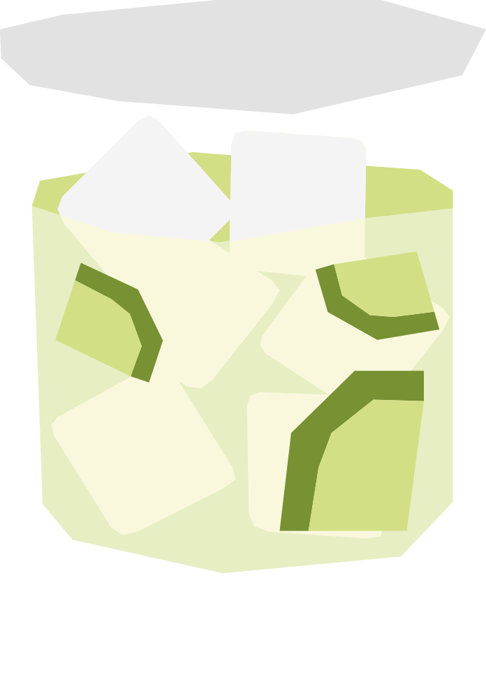

¿Qué significa "caipra"?
Su nombre significa "medicina" en swahili, en broma por su supuesto poder curativo para las resacas. Se popularizó en el famoso restaurante Carnivore de Nairobi, donde se prepara tradicionalmente machacando la lima y la miel con un mazo de madera special.
RECETA
- 60 ml cachaça
- 1/2 limón
- 2 cucharaditas de azúcar
- Hielo triturado
- Corta la lima en gajos y colócala en un vaso con el azúcar.
- Machaca ligeramente para extraer el jugo, sin triturar demasiado la cáscara.
- Agrega la cachaça y llena el vaso con hielo triturado.
- Mezcla bien.
Vaso: Old fashioned / vaso bajo